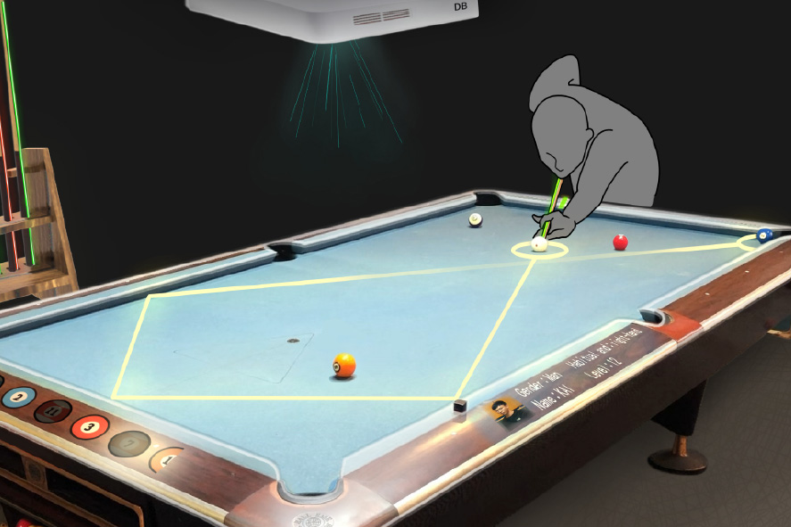
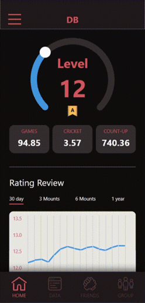
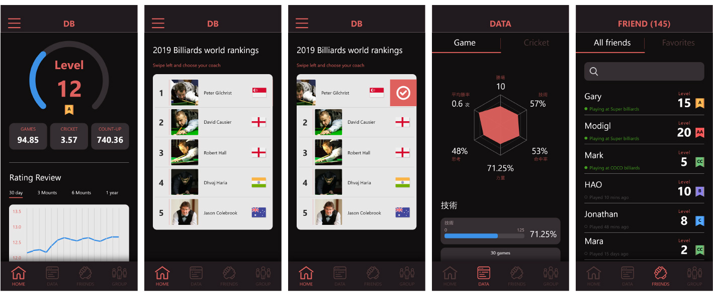
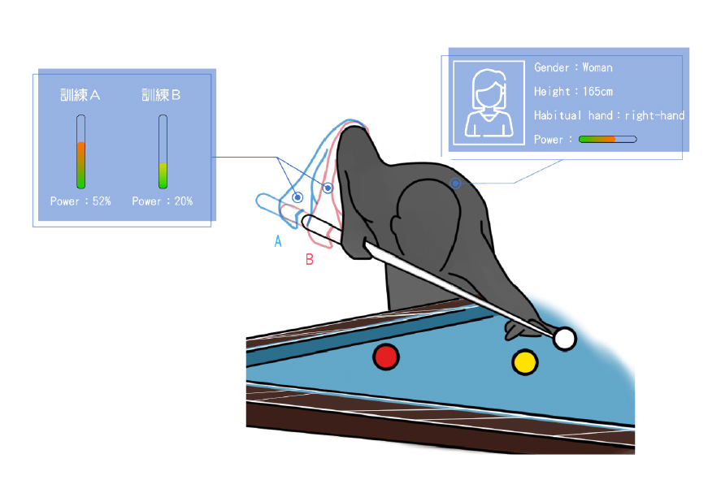
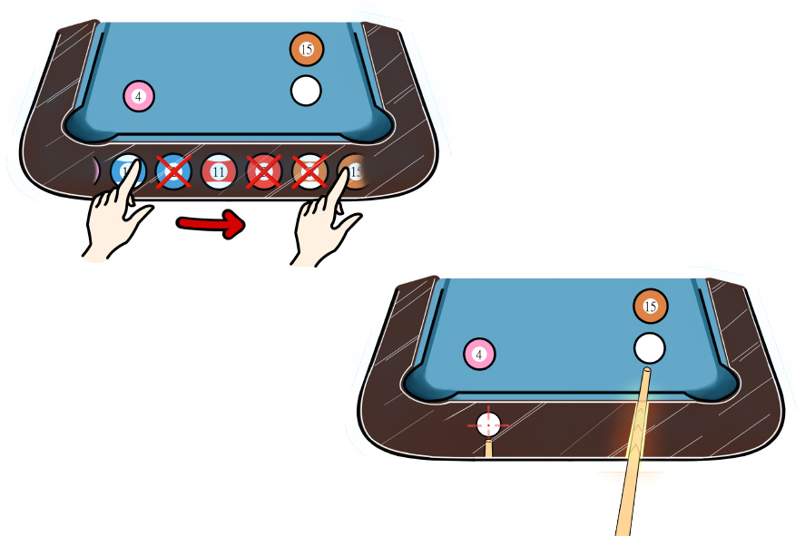

Discover Billiards
Discover Billiards System 是一款虛擬撞球教練互動設備。
本系統採用康寧特殊玻璃設置互動式撞球檯，由於撞球檯邊為曲面，將Corning®Willow®Glass的可彎曲材料，緊貼在撞球檯邊做螢幕顯示；另外球桿採用耐彎、輕薄、均一且不搶色的Corning Fibrance™ Light-Diffusing Fiber材料，利用光纖發光顏色條讓使用者方便調整擊球角度。
撞球檯上方設置攝影機檢視檯面狀態，使用者利用撞球檯邊螢幕選擇球號，藉由影像辨識與AI人工智慧運算判斷並搭配雲端數據傳回撞球桿，找出最適當的擊球點及球桿擺放的位置，並且在球桿的尾端放入電子晶片與雷射頭，利用光纖顯示燈色，指引使用者正確揮桿的角度。另外此系統紀錄使用者個人數據，將數據回傳至APP，除了使用APP指定線上教練外，也可以線上其他玩家互相較量排名。
負責工作內容：UI設計、3D建模、企劃撰寫



